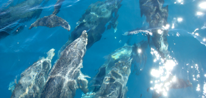
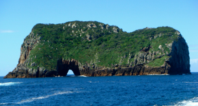
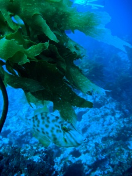
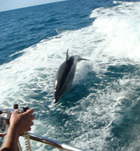
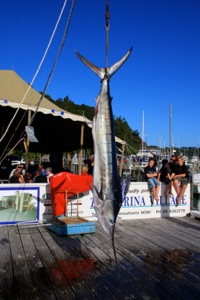

Tutukaka - Poor Knights Islands

Danser med delfiner
fredag den 7. marts 2008

Jeg vågner ved 6 tiden ved at det regner. Der er allerede heftig aktivitet på pladsen, da en del skal afsted med deres trailede både for at deltage i Big fish konkurrencens 3. dag.
Jeg skal møde ved “Dive Tutukakka”´s kontor kl. 8, så jeg står op kl. 7. Pigerne sover videre, så jeg spiser alene, mens jeg pakker de sidste ting: hue, regnfrakke, ekstra fleece. Min erfaring siger mig, at man godt kan blive rigtig kold mellem dykkene, så hellere for meget end for lidt tøj med.
Pigerne når at vågne inden jeg trasker afsted. Det er ikke koldt, men det blæser betydelig mere end de havde lovet, og himelen er overskyet. ikke ligefrem drømmevejr til en dykkertur, men hvad gør det, når man skal ud til et af verdens formentlig 10 bedste dykkersteder (ihvertfald ifølge salig Jaques Cousteau).
Vi er mange der skal afsted, formentlig omkring 30. Vi fordeles på to både, hvor vi klart er færrest på “Advanced” båden. Vandet er ikke alt for varmt (ca. 20 grader) så vi udstyres med en 7 mm wetsuit, hvilket igen betyder væsentlig mere vægt på vægtbæltet ned normalt.

Øerne ligger ca. 25 km fra kysten, så sejlturen derud tager ca. halvanden time. Der er godt med buler på vandet, men ingen bliver søsyge. De fleste har også mere end 200 dyk bag sig ...

I mellem første og andet dyk, sejler vi ind i verdens største klippegrotte. Her kan snildt ligge 15 skibe, men vi har grotten for os selv. Et fantastisk rum, hvor der dog også er blevet holdt en del koncerter. Andet dyk er et grottedyk, og som det første præget af en natur anderledes end den man kender fra de tropiske egne. Her er skønt og man kunne sagtens bruge nogle flere dage. Men jeg er glad for bare at få lov til at dykke her en dag, mens camilla tager sig af pigerne.
Vejret er blevet betydelig bedre, da vi sejler tilbage mod fastlandet. Jeg småblunder i solen, og vågner ved at der pludselig er tumult. Det skyldes at en stor stime Bottlenosed Dolphins ligger og svømmer lige foran vores skib. Vi går i tomgang, mens vi betragter de store smukke og kloge dyr tulle omkring. Flere mumler om at det jo ville være fedt at springe i vandet nu.

Oppe igen er alle i ekstase. Skipper sætter fuld fart på, men det synes delfinerne åbenbart også er sjovt, så selvom vi sejler med ca. 20 knob, er det ingen sag for de hurtige dyr, at følge med. De hopper og springer i vores kølvand hele vejen ind til havnen.

Camilla og pigerne står og venter, da vi kommer i land. Efter en kold øl på “Snappers Rock”, går vi over for at se dagens fangst i fiskekonkurrencen blive vejet. ikke så god en dag som i går, men vi ser dog et par Marlins på 80 kilo.
Sikke en dag!
/Tim
En stor flok delfiner følger vores båd, og vi ender med at få lov til at hoppe i for at svømme med dem. En fed oplevelse!